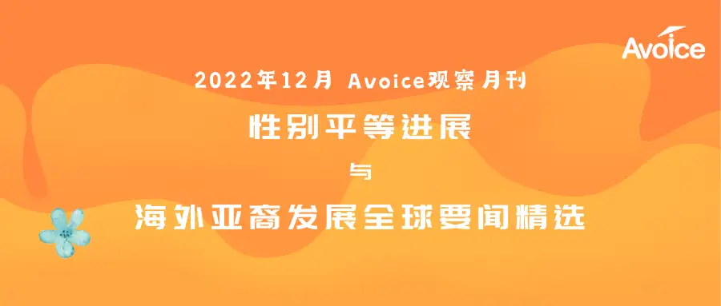

专栏引言：
Avoice观察月刊聚焦每月发生的性别平等进展与海外亚裔发展的全球要闻，通过精选和分享，撬动更为广阔的思考空间，从确定“是什么”至思考“为什么”，在寻求实现性别平等和消除种族歧视的解决办法之前，与大家共同探索发现真正影响性别平等和亚裔发展的问题。
目录
一、新闻评论
2022年诺奖得主被实名指控性骚扰多名中国女性
1.事件简述
2.评论视角
让遭受性骚扰的女性勇敢站出来，为自己的权益发声
警惕Asian fetish，拒绝变相种族歧视
功成名就成为加害者的挡箭牌，受害者需要更多社会关怀
二、Crime
1.华裔男子跨州对岳父岳母行凶只为报复妻子
2.多伦多一华人女子在街上遭随机针刺
3.华人女子与12岁女儿在意大利街头惨遭车祸
4.亚裔男子刺杀前妻 一年后终判决
5.米兰一华人老板被枪杀
三、性别平等
1.美国为促进巴基斯坦两性平等提供2亿美元
2.在性别更平等的国家，主观幸福感的性别差距可能更大
3.经济历史学家发现性别平等有利于经济增长
4.性别均等是实现性别平等的唯一途径
四、亚裔话语权
1.美国国会第三位华裔众议员刘云平，当选美国众议院民主党党团首位亚裔副主席
2.珀斯亚裔高中生获Beazley职业成就奖章，为高中阶段最高学术奖
3.新西兰华人遭遇罪犯入室抢劫与暴打，医院诊断为脑震荡，当地华人团体集会为其发声
4.美国普渡大学校长毕业典礼自编“亚洲版本”语言，遭美国网友谴责并被批涉“种族主义
新闻评论
2022年诺奖得主被实名指控性骚扰多名中国女性
一、事件简述
留学生信息平台公众号“一亩三分地”发布一则关于2022年诺贝尔经济学奖得主圣路易斯华盛顿大学的菲利普·迪布维格的文章，然而，在文章的留言区，一位女生Xiang勇敢地说出自己在WUSTL商学院念研究生时期被该教授性骚扰的经历。接着，第二位女生也勇敢地说出了自己曾被这位教授骚扰。留言区的众多网友给予安慰两位勇敢的女性，给予点赞支持。随后，更多WUSTL商学院校友、彭博社的记者、华盛顿邮报记者、CNN记者都十分关注此事。
12月16日，彭博社经过大量调查，对此事作出详细报告。圣路易斯华盛顿大学也对菲利普·戴布维格的性骚扰指控展开调查。面对多方指控，戴布维格的律师Andrew Miltenberg表示，戴布维格从未与任何学生有过不恰当的肢体或语言接触。评选诺贝尔奖的委员会主席Tore Ellingsen对媒体表示“委员会和学院都没有资格调查研究人员的工作场所行为”，并认为，只要大学尚未确定他的性骚扰，就会为他的伟大科学成就庆祝。圣路易斯华盛顿大学对于外界的疑问表示，目前不会评论任何个案也不会分享任何人的个人信息。
二、评论视角
让遭受性骚扰的女性勇敢站出来，
为自己的权益发声
根据彭博社的调查，WUSTL负责处理校园性骚扰投诉的办公室自10月来还收到了其他学生的指控。但是，这些受害女性大多不愿透露姓名，因为她们仍在学术界工作或依靠雇主担保的签证在美国生活。自Metoo运动以来，很多女性已经不再为害怕荡妇羞辱的不敢发声，而是积极维护自己的权益。然而，现实中出于与当事人的特定社会关系，大声说“不”就变得更加难上加难。我们希望更多遭受性骚扰的女性能够站出来为自己发声，同时也需要为解决他们的顾虑而努力！
警惕Asian fetish，拒绝变相种族歧视
Asian fetish并非积极正面的爱恋，而是充满种族歧视，有损人格的歧视，是亚裔女性面临的风险和耻辱。某些白人男性偏爱亚裔女性并非想要发展一段理性、平等的关系，而是对畸形亚裔恋物癖的喜欢。因为对亚裔女性有着 “顺从、听话、easy”等充满了种族歧视色彩的刻板印象。亚洲女性也往往被教导和善温柔、可爱体贴。这些白人男性看似对亚洲文化很喜欢，实则将自己设想的观念加诸亚裔女性，从而满足自己的优越感。
功成名就成为加害者的挡箭牌，
受害者需要更多社会关怀
我们总是教女孩子要保护好自己，甚至极端如不要穿裙子般的忠告，却很少告诫男性要尊重女性而非物化、性化女生。在面对多方的指控时，戴布维格的律师Andrew Miltenberg称道“作为教育工作者，教授对自己的角色持非常认真及严谨的态度，他觉得他与学生的关系一直处理的非常恰当和专业。”对于Xiang所提到的被教授拉到腿上合影的事件，Miltenberg表示，教授记得拍过这张照片，但是断言Xiang是自愿坐在其腿上，并不存在任何强拉行为，然而Xiang初次来美国留学，无任何主观动机需要在公开场合坐在一名教授腿上。Miltenberg又辩解这些指控都在诺贝尔委员会于 10 月 10 日宣布获奖后浮出水面，这些投诉可能是出于职业嫉妒，还暗示其他经济学家可能煽动学生站出来提出这些“似是而非”的指控。
这位高权重的教授可以聘请专业的律师，并用学术成就掩护自己；女性却要付出更多来证明自己的清白与遭遇。对此，立法、执法以及社会监督都应当更加完善，帮助更多受害者，也警惕更多潜在的加害者。
Crime
华裔男子跨州对岳父岳母行凶只为报复妻子
据WGN9于12月6日报道，36岁的威斯康星州华裔男子Michael Y. Liu被控在威尔县的一所房子内刺伤了他的岳父岳母。
警方称：“66岁的女性受害人在刘某进入后被他刺了几刀，68岁的男性受害人因为保护妻子也被刺中数刀。男性受害人为保护自己和妻子，在与刘某搏斗的过程中刺伤了刘某17次。”
三人都被送往附近的一家医院，情况危急。警方透露，刘某此前被判有家庭暴力罪，并违反了保护令，他应该在12月4日去沃克夏县胡贝尔拘留所报道。他此次行凶只为报复即将离婚的妻子。
刘某曾将车停在克里特岛地区家中的街道上，向坐在客厅里的夫妇开了几枪。幸运的是，他们没有受到伤害。随后刘某进入了房子，对他们进行了行凶。
刘某将面临两项谋杀未遂罪、五项入室盗窃罪、两项严重家庭殴打罪、四项严重殴打罪、严重开枪罪、入室盗窃罪和非法侵入住宅罪。
相关链接：
Small, A., & Flores, C. (2022, December 7). Wisconsin man charged with stabbing Will County in-laws in suspected revenge attack. WGN. Retrieved December 17, 2022, from https://wgntv.com/crime/wisconsin-man-charged-with-stabbing-will-county-in-laws-in-suspected-revenge-attack/
多伦多一华人女子在街上遭随机针刺
据CBC12月5日报道，29 岁的华人女性 Junlan Li 在多伦多 Yonge 和 College 街等红绿灯时腰部被人用针头刺伤。
据Li说，当时她正在想事情，突然有人撞了一下她的右下背部。随后一名热心的陌生男子提醒她检查一下自己的物品，看看是不是丢了什么。这时她才意识到，原来刚刚撞她的人是故意的。
在下一个街区的半路上，Li意识到自己的背部受伤了。“我意识到我被撞到的下背部就像针刺一样。”于是她去了最近的医院，被告知她背部有一处刺伤，疑似是被针刺伤。据悉，Li需要做一系列血液检查和传染病检查，包括艾滋病的暴露后预防。
Li目前已经向多伦多警方报案，警方告诉她，如果他们逮捕嫌疑人，罪名将是持械伤人。
相关链接：
CBC/Radio Canada. (2022, December 6). 'look out for each other,' says Toronto woman after stranger stabs her with needle downtown | CBC News. CBCnews. Retrieved December 18, 2022, from https://www.cbc.ca/news/canada/toronto/needle-stabbing-downtown-toronto-1.6675381
华人女子与12岁女儿在意大利街头惨遭车祸
微信公众号《华人资讯传媒》据《华人讯息网》12月17日报道，一名12岁的华人女孩和她母亲在意大利Prato地区的Poggio a Caiano过马路时被一名70多岁的老人开车撞到，女孩当场死亡，母亲重伤。
据目击者称，华人小女孩被死死卡在了一个轮子下面。一些目击者试图抬起汽车来解救她们，甚至有人带着千斤顶赶来。当时的一名目击者称：这太可怕了，华人小女孩的母亲不停地尖叫，要求大家救救她的小女儿。
目前，警方已经获取了该地区视频监控摄像头的图像，以重建事故的确切动态。
Reference：微信公众号
亚裔男子刺杀前妻 一年后终判决
据《华人讯息网》12月9日报道，去年12月19日，49岁的中国人刘双某在意大利一火车站附近企图用一把25厘米的螺丝刀杀死他的前妻。
受害人的头部，腹部，盆骨均遭到严重刺伤。警方到达现场后，立即将刘双某逮捕。据悉，二人虽然还没有正式离婚，但早已分居。在此期间，刘双某一直纠缠受害者，从恐吓到非法拘禁，甚至强迫受害者发生性关系。
起初，当地法院判处刘双某6年零8个月有期徒刑，但是负责的检察官要求将刑期增加到13年。时隔一年后，法院终于做出最终判决，刘双某将以谋杀未遂获刑8年零15天，并将被驱逐出境。
Reference：公众号
米兰一华人老板被枪杀
据意大利《新华时报》微信公众号“意新华侨网”报道，当地时间12月19日早上7点15分左右，一名持枪男子前往位于米兰市Corvetto区，Angilberto II 广场拐角处Via Bessarione 42号的一家华人酒吧内，并开枪将正在上班的35岁华人老板打死。路人听见枪响后立刻打电话报警并拨打了118急救电话。不幸的是，华人老板当场死亡。
据警方透露，凶手最少开了四枪，而且是近距离射击。整个过程只持续了短短的几分钟，且没有任何偷抢的痕迹。根据初步调查结果，这似乎是针对受害人的有针对性的报复行动，但暂时不能确定凶手射杀受害人的动机。
相关链接：
Chinaqw. (2022). 米兰一华人老板被枪杀 凶手持枪在逃. 中国侨网. Retrieved December 21, 2022, from http://www.chinaqw.com/hqhr/2022/12-20/347309.shtml
图片来源：
（视频）米兰一华人酒吧老板遭枪杀，身中数枪当场死亡_意大利新闻网. (2022). Retrieved December 21, 2022, from http://xinwen.sohu.it/wap/w/y/2022/165639.html
性别平等
美国为促进巴基斯坦两性平等提供2亿美元
据《地理新闻》12月24日报道，美国已为巴基斯坦的性别平等和加强民主预留了2亿美元，作为年度开支计划的一部分。
综合法案是一份单一文件，将几项措施整合为一项措施，它将为美国联邦政府提供资金，直至2023年9月。
综合法案中为巴基斯坦预留的款项是美国两性平等基金的一部分，比2020年拨款增加了20倍。2020年12月，美国国会为促进性别平等拨款1000万美元，为加强巴基斯坦民主拨款1500万美元。而在2000年，巴基斯坦为同样的目的获得了2500万美元。根据世界经济论坛发布的《2022年全球性别差距报告》，巴基斯坦拥有1.07亿女性人口，是性别均等排名第二的国家。该国在146个国家中排名145位。
Source：
Syed, W. A. (2022, December 24). US reserves $200m for Gender Equality, democracy in Pakistan. thenews. Retrieved December 24, 2022, from https://www.thenews.com.pk/latest/1023290-us-reserves-200mn-for-gender-equality-democracy-in-pakistan
在性别更平等的国家，
主观幸福感的性别差距可能更大
一项对2015年和2018年在78个国家收集的国际学生评估计划（PISA）数据的新分析发现，在性别更平等的国家，男女主观幸福感的差异更大。研究人员报告说，性别平等可能会提高男孩的主观幸福感，但不会提高女孩的主观幸福。这项研究发表在《人格与社会心理学公报》上。
研究人员写道：“这项研究的结果提供了迄今为止最确凿的证据，表明社会性别平等水平与青少年主观幸福感的性别差异之间存在着强烈的正相关...具体而言，与性别平等程度较低的国家相比，性别平等程度较高的国家在青少年主观幸福感方面存在更大的性别差距，有利于男孩。虽然性别平等程度较大的国家男孩主观幸福感较高，但女孩主观幸福感不受国家性别平等程度的影响”。
这项研究对世界各地性别与主观幸福感之间的关系提供了非常重要的见解。然而，应该考虑到，研究设计不允许任何因果结论，样本仅包括15岁时在中学就读的学生。
Source：
Guo, J., Basarkod, G., Perales, F., Parker, P. D., Marsh, H. W., Donald, J., Dicke, T., Sahdra, B. K., Ciarrochi, J., Hu, X., Lonsdale, C., Sanders, T., & del Pozo Cruz, B. (2022). The equality paradox: Gender equality intensifies male advantages in adolescent subjective well-being. Personality and Social Psychology Bulletin, 014616722211256.
https://doi.org/10.1177/01461672221125619
经济历史学家发现性别平等有利于经济增长
荷兰瓦赫宁根大学（Wageningen University）的经济历史学家亚历山德拉·德·普莱赫特（Alexandra de Pleijt）和图宾根大学（University of Tübingen）的Jörg Baten的一项研究表明，500年来，在欧洲经济发展得更好的部分地区，女性往往在20多岁结婚，而不是十几岁。他们的研究发表在《世界发展》杂志上。
图宾根商业与经济学院经济史教授Jörg Baten表示：“早婚缩短了年轻女性在农场或劳动力市场寻找工作的时间。婚后，女性只能在家庭中生活。”因此，经济学家认为女性的结婚年龄是衡量性别平等的标准。
研究团队现在已经证明，由于女性更独立的时间更长，她们发展出了更好的数字技能。这些技能包括处理数字、比例和概率，可以在没有正规教育的情况下获得。经济历史学家将数字技能视为社会经济发展的基石。
相关链接：
Baten, J., & de Pleijt, A. M. (2022). Female autonomy generated successful long-term human capital development: Evidence from 16th to 19th century Europe. World Development, 158, 105999. https://doi.org/10.1016/j.worlddev.2022.105999
性别均等是实现性别平等的唯一途径
联合国秘书长12月12日表示，性别平等本质上仍然是一个权力问题，但要改变男性统治的文化并实现平衡，我们需要在各级领导、决策和参与方面实现平等。
总体而言，“我们已经取得了长足的进步”，例如两年前在联合国历史上首次在高级领导小组内实现平等。他指出，五年前，担任这些角色的女性比例仅为25%。2018年，130名驻地协调员实现了平等，总部各地点的女性代表人数现已达到平等，而女性工作人员至少占50%的联合国实体数量已从5个增至26个。
“与此同时，差距仍然存在”，他警告道。他说，在人道主义和维和行动的主要办事处之外，“进展缓慢，在某些情况下，我们倒退了。我们应该特别关注的是，被招聘到秘书处初级职位的女性人数减少。这可能会对未来的平等前景产生严重影响。”到2025年，即最后期限前三年，秘书处工作人员总体上应接近“专业”职等的平等，但这一数字掩盖了一个事实，即到2028年，该领域的平等才可能实现。他说，这意味着总体战略现在必须专注于维持该领域的进展。
Source：
United Nations. (2022). Gender parity, the only path to gender equality: Guterres | UN News. United Nations. Retrieved December 25, 2022, from https://news.un.org/en/story/2022/12/1131642
亚裔话语权
美国国会第三位华裔众议员刘云平，
当选美国众议院民主党党团首位亚裔副主席
加州华裔联邦众议员刘云平（Ted Lieu）最近当选美国众议院民主党党团House Democratic Caucus）副主席，是首位担任此职位的亚裔人士，在众议院民主党领导层排名第4。
刘云平（Ted W.Lieu）于1969年出生于中国台湾，美籍华裔国会众议员。3岁随父母从台湾移民来美，毕业于斯坦福大学和乔治城大学法学院，毕业后参加美国空军并获得中校军衔。2002年，刘云平当选南加州托兰斯市议员；2005年至2010年担任加州州众议员。2014年11月4日，当选美国国会第三位华裔众议员，成为继赵美心和孟昭文之后国会第三位华裔众议员。
刘云平谈到自己的经历时表示，他能从一名在跳蚤市场上谋生的移民到现在进入众议院民主党领导层，足以显示“美国梦的持久性”。他的经历在某种程度上也反映了亚裔社区近来发生的巨大演变。刘云平表示，过去一些年，亚裔社区的政治活动、影响力和可见度都大幅上升，也越来越被美国社会所接受，这种演变与他的个人经历相吻合。
相关链接：
华人参政议政( December 10, 2022) 喜讯 | 刘云平当选美国众议院民主党党团副主席 成为首位担任此职位的亚裔众议员. 北美华人世界. https://mp.weixin.qq.com/s/FsoSda8mYH9pFf15vWzK9g
珀斯亚裔高中生获Beazley职业成就奖章，
为高中阶段最高学术奖
珀斯现代学校越南裔毕业生Jessica Doan于12月21日周三被授予 Beazley Medal职业成就奖章，以表彰她在12年级考试中的优异成绩，在五个科目中获得了最高分。她还因在化学方面名列前茅而赢得了主题展览。
41年前，Jessica Doan的家人第一次来到澳洲，Jessica Doan的母亲Minh Doan当时只有七岁。Jessica Doan的父亲，电气工程师Kanh Doan，12岁时也随父母乘船逃离越南，在马来西亚的一个难民营呆了两个月后抵达澳大利亚。Jessica Doan的妈妈Minh Doan表示“我们喜欢越南人民这种吃苦耐劳的品质，努力工作确实有回报。”
尽管他们很少和孩子谈论他们的过去，但他们卑微的背景使整个家庭决心努力工作，为社会做出贡献，并对他们获得的机会表示感谢。回越南和去孤儿院回报社会的经历，也对Jessica Doan决定成为一名医生发挥了作用。甚至在第一学期考试期间感染了新冠病毒，也没有让Jessica Doan退缩。Jessica Doan表示“我只是想达到尽可能高的目标，然后看看我的分数会把我带到哪里。”
相关链接：
微珀斯. ( December 22, 2022) 学霸的秘密！越南难民的孙女Jessica Doan获得最高高中奖！苦难激励她努力学习！. 微珀斯. https://mp.weixin.qq.com/s/uicfIuZTahCRV7b-DBRXRg
新西兰华人遭遇罪犯入室抢劫与暴打，
医院诊断为脑震荡，
当地华人团体集会为其发声
12月7日下午，奥克兰北岸Glenfield一家诊所里遭遇入室抢劫，罪犯将诊所内的郎先生暴打至血流满面后便步行离去，郎先生第一时间报了警。将郎先生送院后，医生诊断郎先生有脑震荡，并伴有严重后遗症。警方说这是一起严重的入室盗抢事件，罪犯发现有人后才演变成暴力事件。郎先生的妻子孙医生说，这次事件对于他们的心理冲击十分巨大。“听到很多朋友或同行都遭遇入室盗窃，几乎每次报警之后都是不了了之的。”孙医生不希望这件事被上升到种族仇恨的层面，但现在越来越多人关注，她希望能藉此机会，引发各界更深刻的思考。
事件发生之后，一众华人团体对此展开激烈讨论。其中一个热议焦点是——治安问题愈演愈烈，华人社区能否真正站出来为自己发声？奥克兰华人Cindy说：“这次被打的是我最近才去过的诊所的医生家人，更是让我有了切肤之痛，感同身受，觉得不能再沉默了。”Whau地区议会候选人Bruce Xu表示，此次北岸中医诊所被人入室暴打并非单独事件，不能坐视不理。他希望在近日组织一场华人的发声活动，慰问伤者、向有关部门递交倡议书，呼吁政府正视治安问题。12月18日周日上午，两百多名华人和其他亚裔人士，在奥克兰市中心皇后街上的Aotea广场集合，举行呼吁政府加强惩治犯罪的发声活动。来自印度社区的日杂与企业主组织主席Sunny Kaushal也参与了本次活动。
相关链接：
发现君. ( December 13, 2022) 奥克兰华人遭入室抢劫，被打满面流血，脑震荡送医！这次华人决定不再忍气吞声……发现新西兰. https://mp.weixin.qq.com/s/Zvsd6svZjBWq0FCYznGH7A
美国普渡大学校长毕业典礼自编“亚洲版本”语言，
遭美国网友谴责并被批涉“种族主义
当地时间12月10日，普渡大学校友、WJOB电台老板詹姆斯·代德洛受邀作毕业典礼主题演讲。代德洛发表了有关言论自由的观点，还提到自己为了逗小孙女编了一种“语言”。普渡大学西北校区校长托马斯·基翁（Thomas L. Keon）回到台上发言时为了接嘉宾的梗，他称：“好吧，我能说的就是……”接着发出了一段没人听懂的怪声，随后基翁称，这段算是他编的代德洛自创语言的“亚洲版本”。
该视频随后在社交平台引发争议，美国网民指责基翁的表现令人尴尬且涉嫌种族主义，不少普渡大学毕业生也发声谴责基翁的表现，称其应该立马下台。12月14日，基翁在普渡大学西北校区官网发布道歉信，为自己“冒犯和麻木不仁”的言论道歉，他会从此事中吸取教训，并保证自己和校方都会采取行动，避免今后再次发生此类失误。
相关链接：
严姗姗. ( December 15, 2022) 发出怪声称是“亚洲版本”语言，美国大学校长道歉. 观网文娱. https://mp.weixin.qq.com/s/hLd2CuoeTX23pR-2cuap4w
* 注：本文所收录的信息仅用于分享交流，不代表Avoice的立场和观点
撰稿 I 庞海尘 陈子涵 王莹 Jacqueline
排版&封面 I 陈佩瑾 戴翰林
图片来源 I 新闻原文